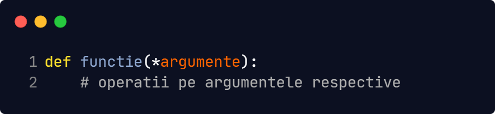

Funcțiile reprezintă bucăți de cod care sunt executate doar când sunt apelate. O funcție poate să
primească unul niciun parametru, unul sau mai mulți, și poate returna valori sau nimic.
Pentru a defini o funcție, folosim cuvântul cheie def (vom observa că acest cuvânt cheie
este folosit și
pentru a defini clase).
Din câte putem observa, această funcție nu primește niciun parametru și nu returneaza nicio valoare, doar
afișeaza un șir de caractere cu ajutorul print().
Această funcție primește ca parametru o valoare numerică și îi returnează pătratul. Dacă vom apela
laPatrat(5), ne va fi returnată valoarea 25. În cazul în care apelăm orice altceva care nu
reprezintă o
valoare numerică, spre exemplu un șir de caractere sau un obiect, vom primi eroare. De asemenea, vom primi
eroare dacă apelăm funția laPatrat, dar argumentele cu care o apelăm nu coincid cu
argumentele pe care
le primește funcția: laPatrat(5,20), laPatrat() etc.
Dacă nu suntem hotărâți în legătură cu numarul de argumente pe care am dori să le primească o funcție, putem declara o funcție care arată așa:
Când este apelată funcția, argumentele vor fi primite sub formă de tuplu, acesta putând fi parcurs pentru a fi efectuate operații pe el.
Putem de asemenea să declarăm o funcție care nu face absolut nimic: